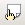

Seccions
Una secció és una part d'un document que es vol tractar com un bloc i que es vol que tingui un format particular o diferent de la resta.
Tots els documents es creen amb una primera secció per defecte. Per tal de crear-ne una de nova, cal inserir-la.
En cas de tenir text seleccionat en el moment de crear una nova secció, el text quedarà com un nou paràgraf formant la nova secció.
Recupereu el document tarradellas.odt i posicioneu-vos a continuació de la línia ”Text integre del BOE amb el restabliment de la Generalitat”.
Seleccioneu Insereix | Secció…
Una vegada inserida una nova secció, apareix un quadre de diàleg emergent que, en primer lloc, demana el nom que es vol donar a la secció. Podeu deixar el que proposa per defecte (“Secció 1”).
En aquest mateix quadre de diàleg, indicareu a el LibreOffice Writer que la secció contindrà el text que hi ha en un altre fitxer de text. Marcareu la casella Enllaç i, a Nom del fitxer, navegareu fins a trobar el fitxer restablimentgeneralitat.odt. Observareu que queda marcada la casella Protecció contra escriptura | Protegeix (això indica que el text introduït no es podrà modificar).
Cas de treballar amb Windows, el document que inseriu com a secció podria enllaçar-se amb DDE (Data Dynamic Exchange) si es vol que l'enllaç s'actualitzi automàticament. En aquest cas, en comptes de referenciar el nom d'un fitxer caldria especificar l'origen de les dades externes en el format següent: <Servidor> <Tema> <Element>, on <Servidor> és el nom DDE del programa que serveix les dades, <Tema> és el nom del fitxer i <Element> és el nom de la part del fitxer que es vol referenciar. Un exemple d'ordre DDE podria ser ”soffice x:\restablimentgeneralitat.odt Secció1”.
A continuació, determinareu el format global de tota la secció (independentment que, més endavant, es modifiqui el format d'algun paràgraf o text individual).
La segona “pestanya” del quadre de diàleg permetria posar el text de la secció en columnes periodístiques. De moment, no cal tocar-la.
La tercera “pestanya” permet fixar la sagnia de la secció respecte aybls marges “estàndard” de la pàgina, és a dir, permet fer que el text de la secció tingui un marge esquerre o dret diferents de la resta del document. Introduireu 1,00 cm per banda.
La quarta “pestanya” facilita que la secció tingui un fons “diferent”. En aquest cas, seleccioneu el color “Blau 10”.
La darrera de les “pestanyes” facilita la configuració d'on han d'aparèixer les notes que pugui contenir la secció. Ho deixareu tal i com ve per defecte (ja que el text que inseriu no en conté).
Ja només resta clicar el botó “Insereix” per acabar la feina i fer que el text desitjat aparegui com una secció del document que esteu treballant.
Modificar el format de pàgina
En més d'una ocasió haureu tingut la necessitat d'inserir, en un document, una pàgina amb un format diferent. Això s'aconsegueix aplicant un nou estil de pàgina.
Obriu el document paisos.odt i aneu a la darrera posició. Ara heu de fer aparèixer el quadre d'Estils i formatació. Cliqueu la icona corresponent .
Una vegada us aparegui el quadre, caldrà que seleccioneu els Estils de pàgina.
El pas següent serà crear un nou estil de pàgina, basat en l'estil per defecte, que tingui la pàgina apaisada. Per fer-ho, només caldrà que posicioneu el ratolí en un espai buit del quadre d'Estils i formatació i cliqueu amb el botó dret. Apareixerà un menú de context que us deixarà crear un nou estil:
En la pestanya “Organitzador” del quadre de diàleg que apareix a continuació, entrareu les dades següents:
-
Nom: Apaisat.
-
Estil següent: Pe defecte.
-
Categoria: Estils personalitzats (que és l'opció que apareix per defecte).
Ara cliqueu la pestanya “Pàgina” i seleccioneu Orientació | Horitzontal:
Si es vol, aquest és el moment de determinar una capçalera o un peu diferents per a aquest format de pàgina (clicant les pestanyes Capçalera o Peu de pàgina respectivament).
Una vegada creat el nou estil, ja només resta aplicar-lo. Confirmeu que sou a la darrera posició del document i seleccioneu Insereix | Salt manual ….
Al quadre de diàleg Insereix un salt, haureu de triar l'opció Salt de pàgina i, a Estil, Apaisat (que és l'estil que acabeu de crear). Cas de voler una numeració diferent per a les noves pàgines, aquest és el moment de fer-ho.
Observareu que s'ha creat una nova pàgina, apaisada, on podreu inserir la imatge “planisferi.jpg” (Insereix | Imatge | Des d'un fitxer …).
{kind=link}
Si ara “desseleccioneu” la imatge que acabeu d'inserir i premeu la tecla de retorn, veureu que es crea una nova pàgina i que, aquesta, ha retornat a l'estil Per defecte.
Deseu el document en la vostra carpeta de treball.

|
|

|
|